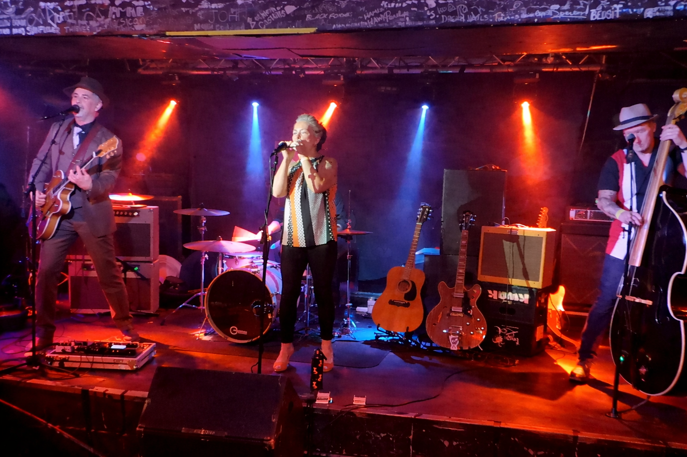
SWINGABILLY ROCK
We're a 4-piece oddball rockabilly-swingabilly-jazzabilly-popabilly outfit from Yorkshire, playing a wide range of fun, bouncy tunes from jazz-blues guitar solo fests through to danceable swing - always ending the night with crowd favourites that get everyone dancing and singing along!
Vintage sounds with a modern flavour.
2026
25TH JULY 2026 | THE FERRY INN, CAWOOD
3.30PM | FREE
8TH AUGUST 2026 | SLUMBER ON THE HUMBER FESTIVAL
4.00PM | FREE
22ND AUGUST 2026 | SEVEN ARTS, LEEDS
4.00PM | FREE
22ND AUGUST 2026 | CAWOODSTOCK @ JOLLY SAILOR, CAWOOD
8.00PM | FREE
5TH SEPTEMBER 2026 | PRIVATE PARTY
19TH SEPTEMBER 2026 | PRIVATE PARTY
21ST NOVEMBER 2026 | NORTHERN GUITARS, THE CALLS, LEEDS
NB: WE HAVE AND CAN SUPPLY ALL OUR OWN EQUIPMENT AS DESCRIBED BELOW, THIS LIST IS ONLY
FOR SOUND ENGINEER REFERENCE IN SETTINGS WHEN PA IS BEING PROVIDED
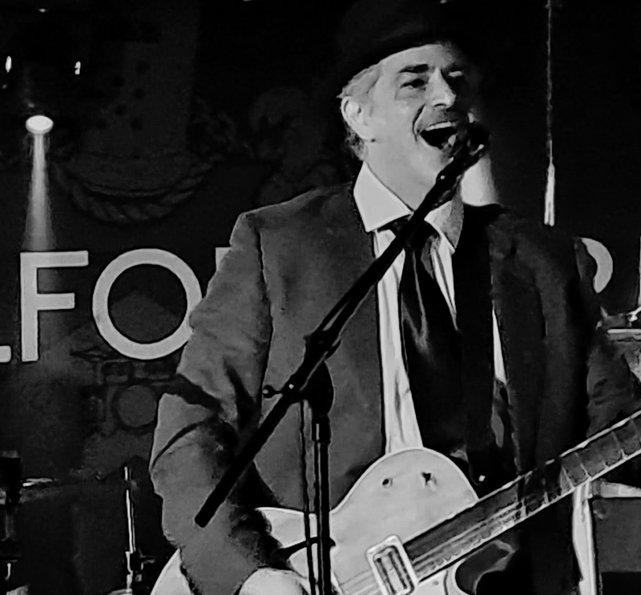
MaRcuS baW
GuITAR/vOCaLS
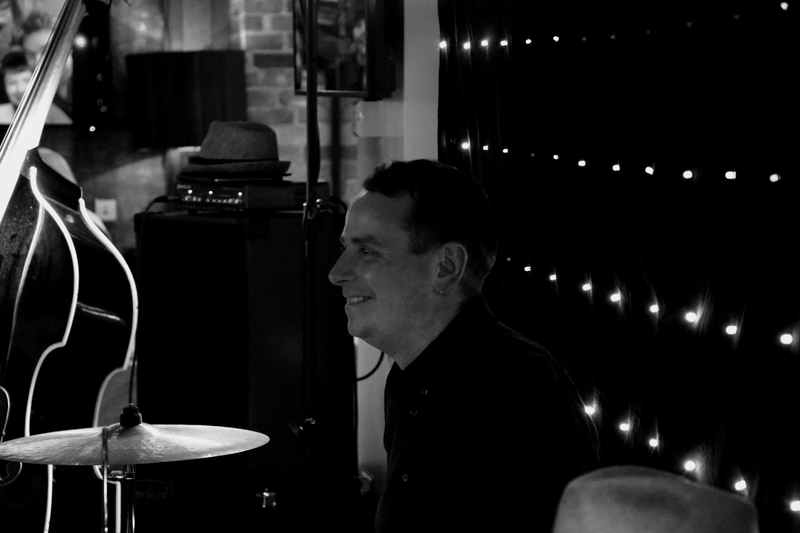
jIM MoRRow
DRUMS
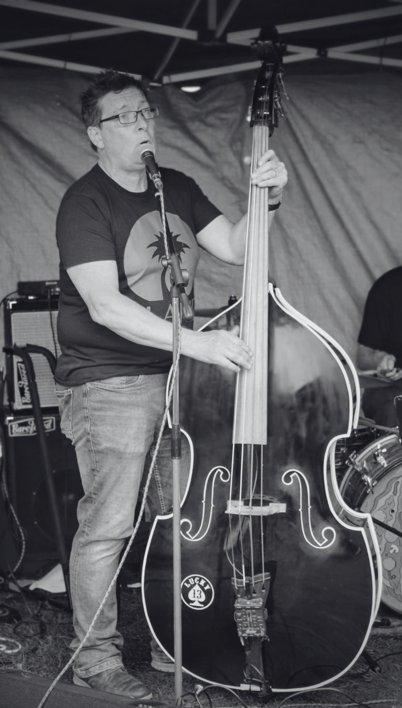
Patrick MOrriS
Double BaSS/vOcals
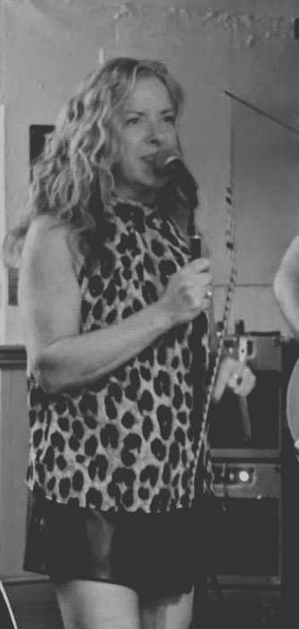
LouiSe StarkS
vOcalS
we're a difficult band to describe - we perform a huge range of material in a very unique style. it just turned out to be easier to list the kinds of things we play!
caLL us Or text: 07747600617
EMAIL: info@thesicknotes.co.uk
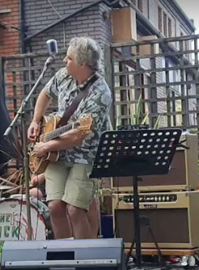
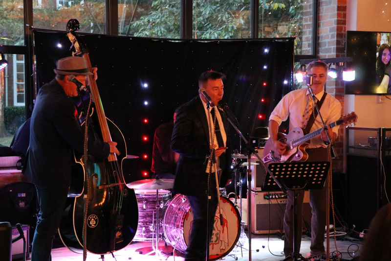
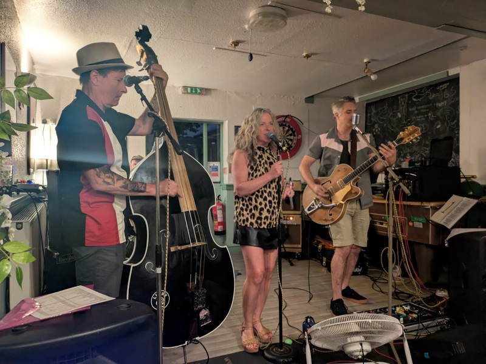
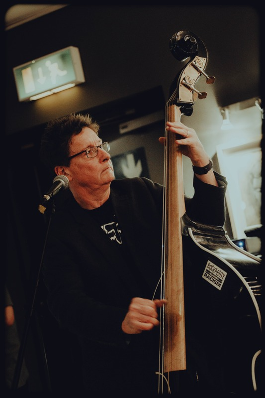
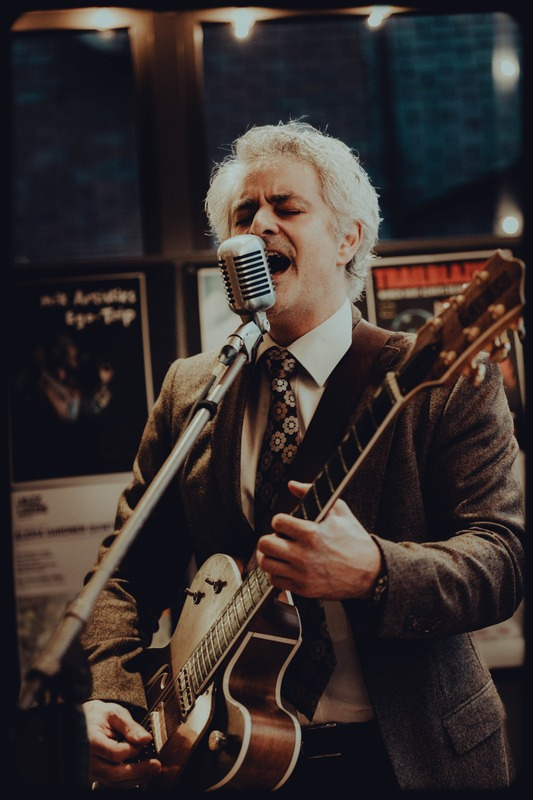
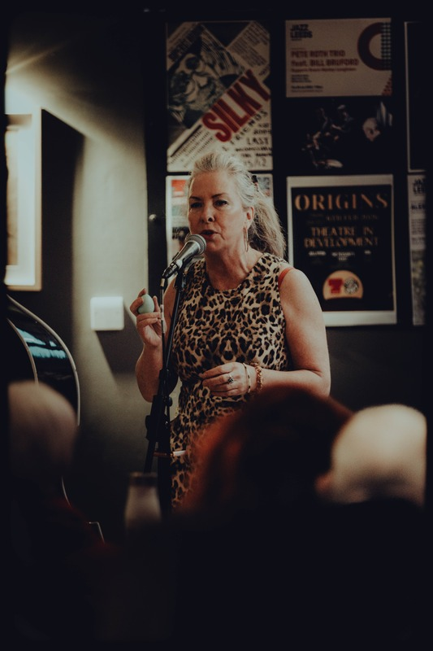
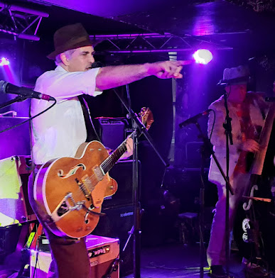
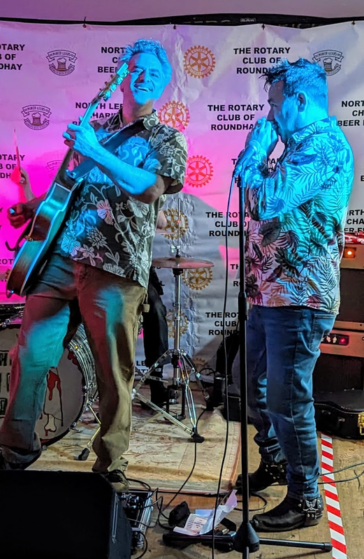